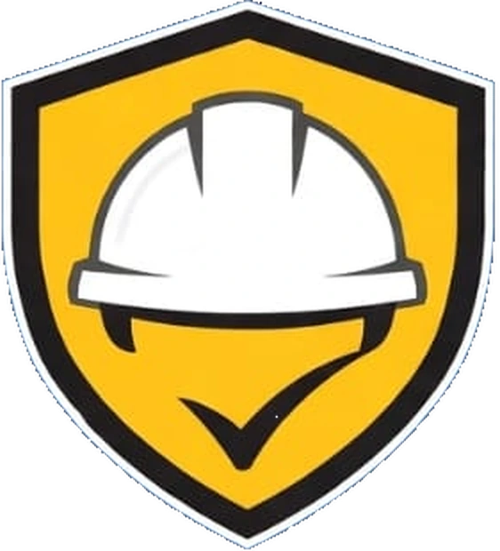
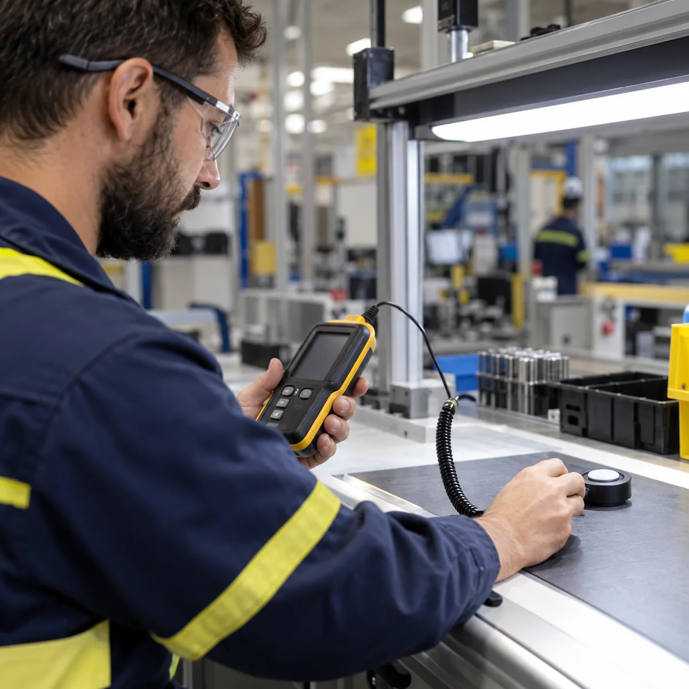
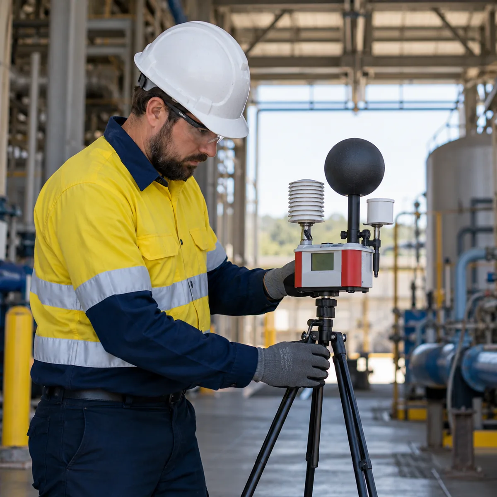
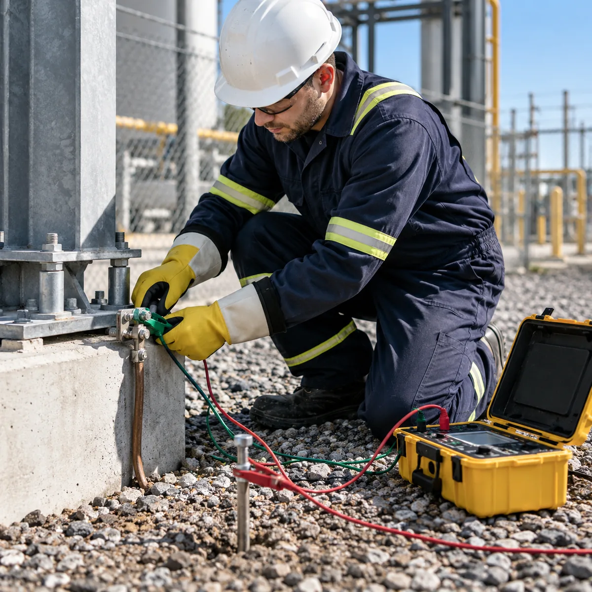
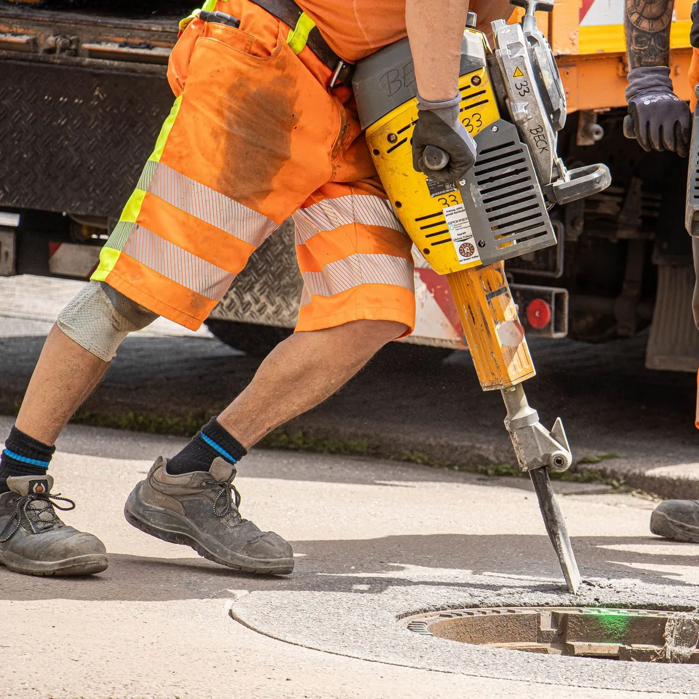

Higiene y Seguridad en el Trabajo · CABA y GBA
Mediciones, informes y seguridad en obra para tu empresa
Relevamos tu planta, oficina u obra y te entregamos cada estudio por escrito, con el protocolo que pide la SRT.

Prevención para un trabajo más seguroSoluciones para tu empresa
Estudios y mediciones
Iluminación, ruido, carga térmica, puesta a tierra, vibraciones y ergonomía.
Ver medicionesProtección contra incendio
Informe de protección contra incendio y plan de evacuación para tu edificio.
Ver incendio y evacuaciónSeguridad en obra
Programa de seguridad, ATS, visitas y permanencia en obra.
Ver seguridad en obra- Iluminación y ruido
- Carga térmica
- Puesta a tierra
- Vibraciones
- Ergonomía
Programas de seguridad, ATS y servicio externo
Estudios y mediciones en tu lugar de trabajo
Cada estudio termina en un informe por escrito, con el protocolo que corresponde.

Iluminación
Medimos la luz en cada puesto y sector, de día y de noche, y verificamos que la iluminación de emergencia funcione cuando se corta la energía.
Recibís: Protocolo de iluminación con los puntos medidos y lo que hay que corregir.
Pedir esta mediciónRuido
Medimos el ruido en los puestos y con dosímetro sobre el trabajador, analizamos por banda de octavas para elegir la protección auditiva y evaluamos el ruido que sale hacia afuera.
Recibís: Protocolo de ruido con la exposición de cada puesto y las medidas a tomar.
Pedir esta medición
Carga térmica
Medimos las condiciones de calor en hornos, cocinas, depósitos y puestos al sol para definir pausas, hidratación y cambios en el ambiente.
Recibís: Informe con la evaluación de cada puesto y las recomendaciones.
Pedir esta medición
Puesta a tierra
Medimos el valor de las puestas a tierra y verificamos la continuidad de las masas en tableros, máquinas y estructuras.
Recibís: Protocolo de puesta a tierra y continuidad, con los puntos a revisar.
Pedir esta medición
Vibraciones
Medimos y analizamos las vibraciones que recibe el trabajador: en todo el cuerpo, en autoelevadores y máquinas viales, y en mano y brazo, con martillos y amoladoras.
Recibís: Informe con la exposición de cada puesto y cómo reducirla.
Pedir esta mediciónErgonomía
Identificamos y evaluamos los riesgos por posturas, esfuerzos y movimientos repetitivos, en planta y en oficina.
Recibís: Evaluación de cada puesto con las mejoras a aplicar.
Pedir esta mediciónProtección contra incendio y plan de evacuación
Para que el edificio cumpla y para que, si pasa algo, cada persona sepa qué hacer.
Informe de protección contra incendio
Relevamos el edificio, la carga de fuego y los medios de extinción, y te decimos qué falta y dónde va cada cosa.
Plan de evacuación
Definimos salidas, recorridos y roles, para que cada persona sepa qué hacer si hay que salir.
Seguridad en obra, de los papeles a la permanencia
Acompañamos la obra desde la documentación inicial hasta el control diario.
Programa de seguridad
El documento que pide la ART antes de empezar, hecho para tu obra y sus etapas.
ATS · Análisis de Trabajo Seguro
Cada tarea riesgosa paso a paso, con sus riesgos y cómo controlarlos.
Visitas a obra
Recorremos la obra, controlamos y dejamos constancia de cada visita.
Permanencia en obra
Un técnico en la obra durante la jornada, cuando la obra lo necesita.
Gestión con la ART y legajo técnico
Avisos, documentación y legajo al día.
Servicio externo con abono mensual
Un profesional que conoce tu empresa, la visita todos los meses y mantiene tu legajo técnico al día.
- Visitas periódicas según la cantidad de trabajadores y el riesgo de tu actividad.
- Legajo técnico, registros y relación con tu ART.
- Capacitaciones al personal según la Ley 19.587.
- Mediciones e informes cuando corresponde renovarlos.
Cómo trabajamos
- 01
Nos contás qué necesitás
Por WhatsApp o mail: actividad, cantidad de personas y qué te pidió la ART.
- 02
Visitamos tu empresa u obra
Relevamos puestos, instalaciones y la documentación que ya tenés.
- 03
Medimos y evaluamos
Con el instrumental de cada protocolo y la planta funcionando como siempre.
- 04
Te entregamos todo por escrito
Informes y protocolos firmados, con lo que hay que corregir y en qué orden.
¿Cuándo vencen tus mediciones?
Elegí el mes de la última medición de cada protocolo y te mostramos cuáles hay que renovar.
Referencia general: estos protocolos se renuevan una vez por año. Tu ART o una inspección pueden pedirte otra frecuencia.
Coordinemos una visita a tu empresa u obra
Contanos la actividad, cuántas personas trabajan y qué te pidió la ART. Te respondemos por WhatsApp.
- 11 3390-5301
- HySSOSA@gmail.com
- CABA y GBA
¿Qué recibo después de una medición?
Un informe por escrito con el protocolo de la SRT que corresponde (iluminación, ruido o puesta a tierra), firmado por el profesional y con lo que hay que corregir. Es lo que presentás ante tu ART.
¿Cada cuánto hay que repetir las mediciones?
Como referencia, una vez por año. Tu ART o una inspección pueden pedirte otra frecuencia, y conviene repetirlas si cambiás máquinas, luminarias o la distribución de los puestos.
¿Qué incluye el servicio externo con abono mensual?
Visitas periódicas según la cantidad de trabajadores y el riesgo de tu actividad, el legajo técnico al día, las capacitaciones de la Ley 19.587 y la relación con tu ART.
¿Dónde trabajan?
En CABA y GBA: vamos a tu planta, oficina, comercio u obra.